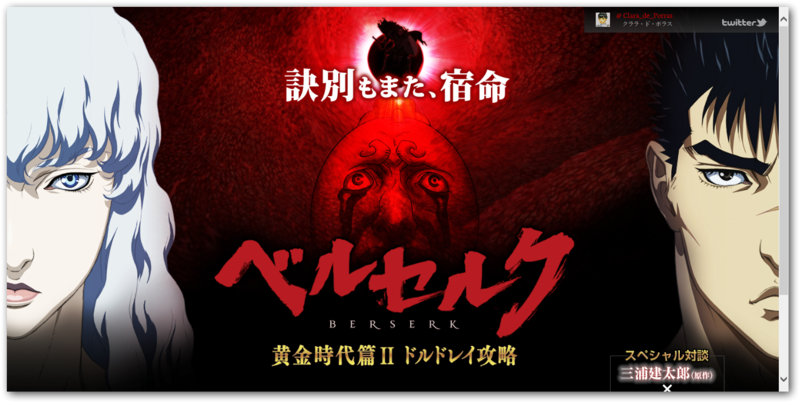
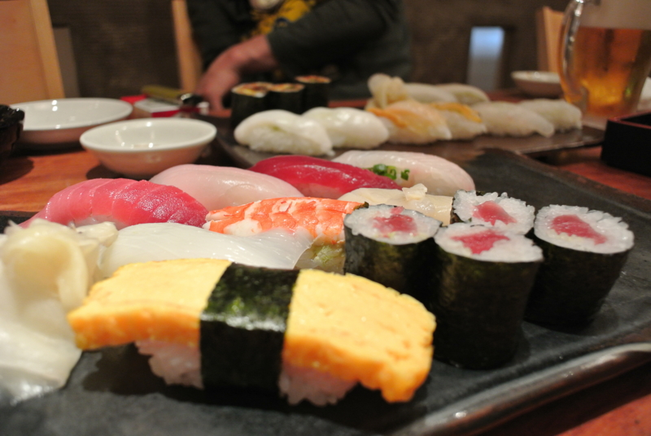

ベルセルク 黄金時代篇II ドルドレイ攻略
公開日：

ベルセルク 黄金時代篇Ⅰ 覇王の卵 - だるろぐ に引き続き、弟一号と「ベルセルク 黄金時代篇II ドルドレイ攻略」を観に行った。今回は映画の日とか何とかで、チケットが一人1000円！ ちょっとうれしい。
映画『ベルセルク 黄金時代篇II ドルドレイ攻略』2012年6月23日(土)ロードショー (c)：2012 三浦建太郎（スタジオ我画）・白泉社／BERSERK FILM PARTNERS
感想は、
- 完全に18禁でした。
- ピピンしゃべった！
- え、アレを端折っちゃうの？
といった感じ。あと、戦闘シーンはやっぱり迫力あるなぁ、といった感じ。百人切りとお姫様のエッチシーンが見たい人はぜひ。

映画のあとはお寿司屋さんでちょいと一杯。鑑賞券の半券をもっていると一割引きでやすかった。お会計の時、女性の店員さんに映画の感想を聞かれたけど、まさかエロかったです(*゜∀゜)=3 とはいえなかったので、「シナリオは原作通りでしたけど、迫力ありましたよ！」と無難に答えておきましたです。
次は蝕か……(；ﾟдﾟ)ｺﾞｸﾘ…